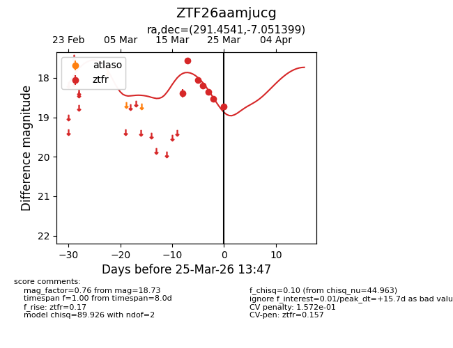
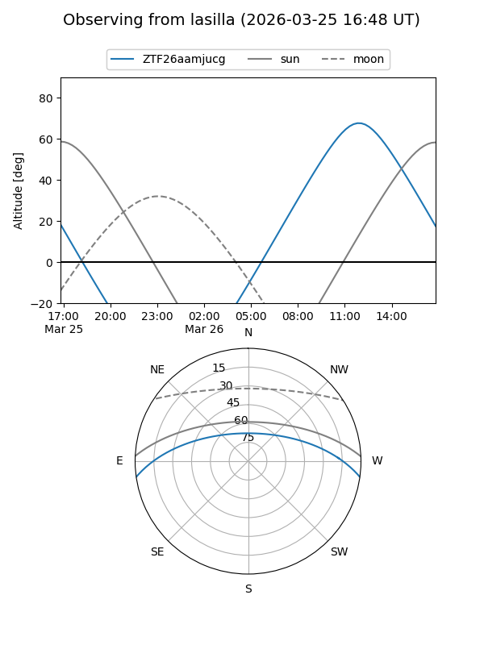
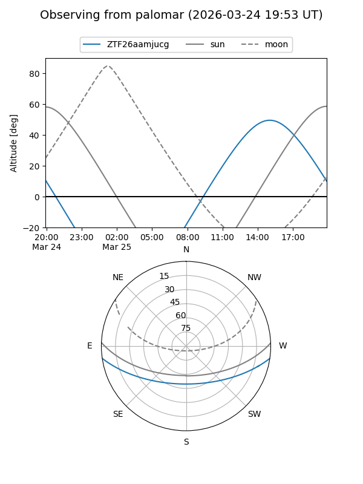
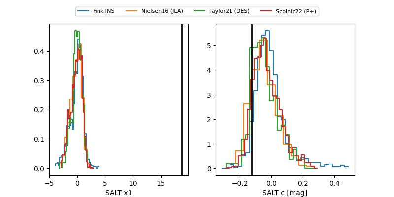

ZTF26aamjucg
Target ZTF26aamjucg at 2026-03-25 13:49
Aliases and brokers:
FINK: link
Lasair: link
ALeRCE: link
alt names
ZTF26aamjucg (ztf,fink_ztf)
Coordinates:
equatorial (ra, dec) = 291.4541,-7.05140
equatorial (HMS+DMS) = 19:25:48.99,-07:03:05.03
galactic (l, b) = (30.5029,-10.83450)
Flags:
likely cv
Photometry:
last ztfr=18.73
7 ztfr detections
Lightcurve

Visibility


Additional plots
